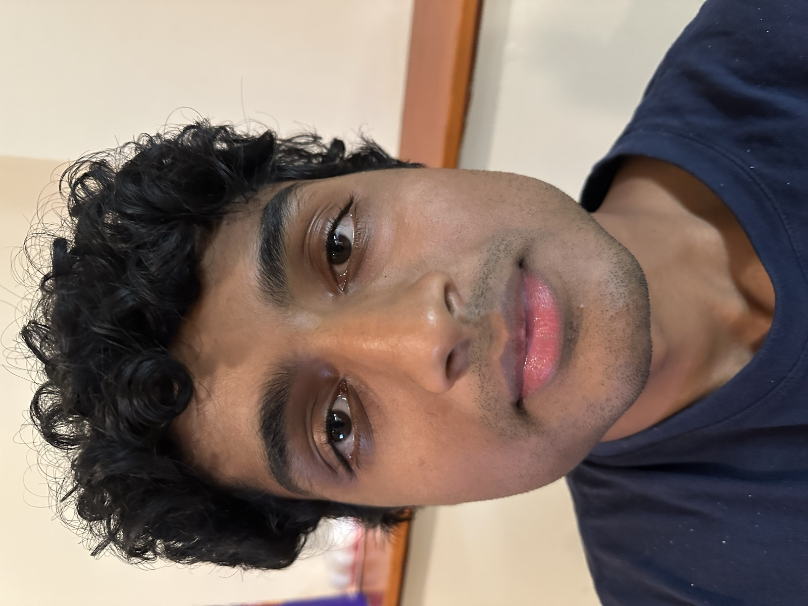
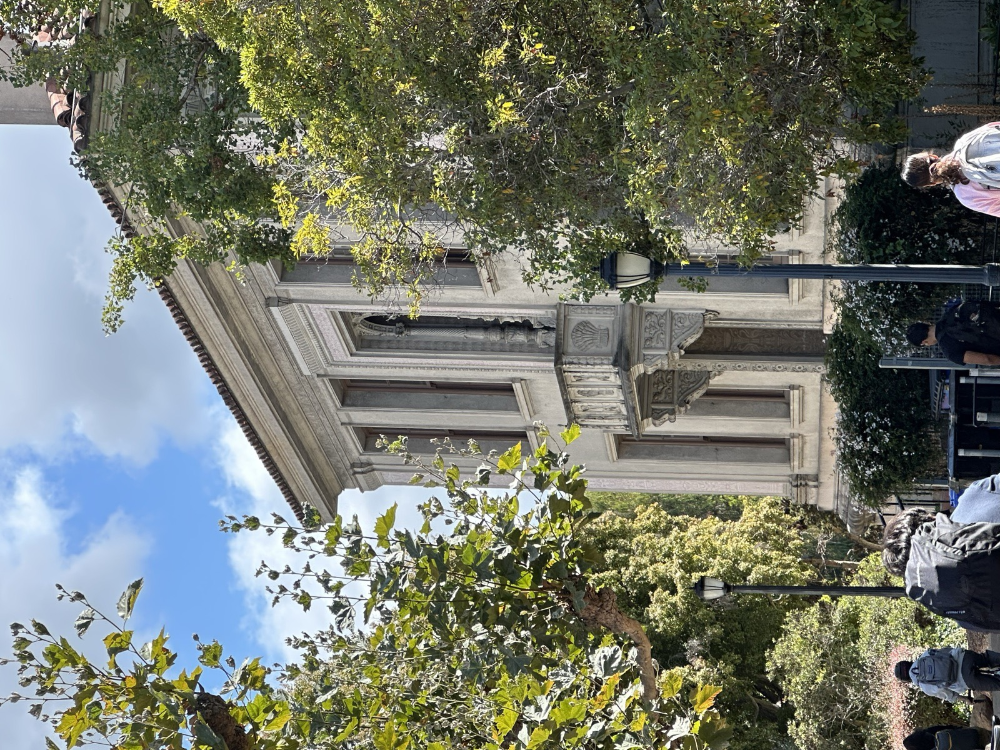
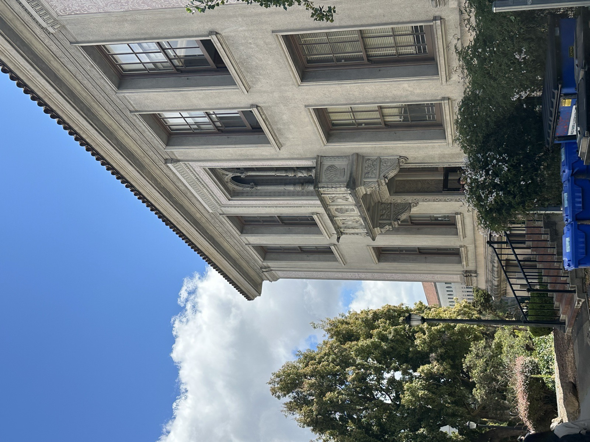
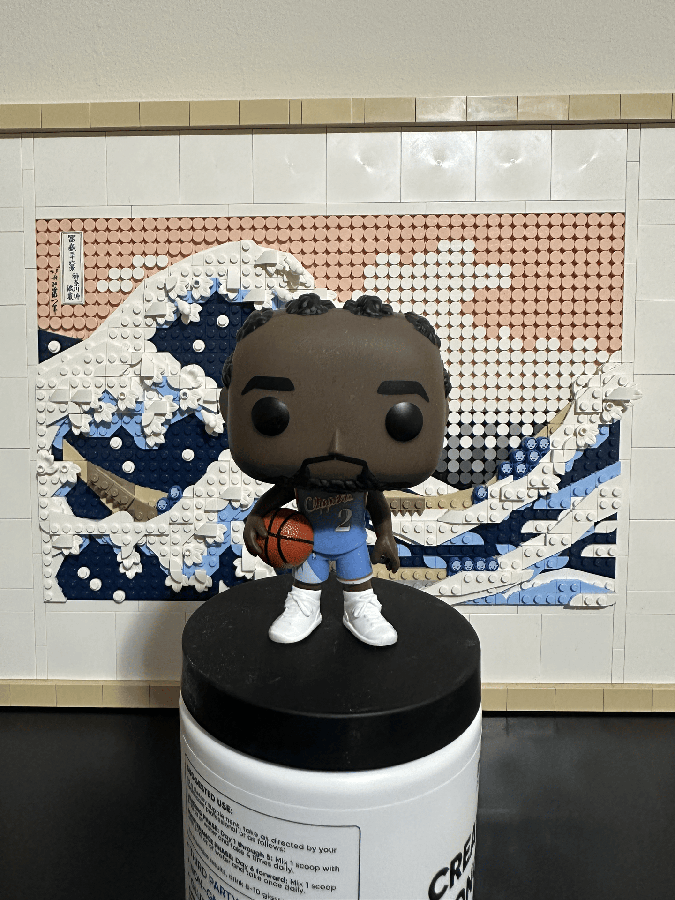

Part 1: Selfie Comparison
Close-range selfie vs. stepped-back-and-zoomed selfie, and why the second looks better.

Why it looks different
Close up my nose looks huge and everything's distorted; stepped back and zoomed in it looks way more normal since the camera's far enough that the distances across my face don't matter as much anymore.
Part 2: Architectural Perspective
Building facade zoomed from a distance vs. walking closer without zoom, keeping the building roughly the same size in frame.


Why perspective changes
Zoomed in from far away the building looks flatter and less warped; up close with no zoom the lines converge way more and it looks like it's leaning back at you.
Part 3: Dolly Zoom
Camera moves backward while zooming in, keeping the subject the same size — background appears to stretch/warp.

What's happening
I stay the same size the whole time since stepping back and zooming in cancel out, but the background stretches and warps around me — classic vertigo effect.